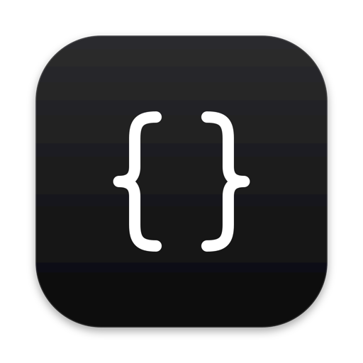

LaTeX, Mermaid and Markdown, compiled on your Mac.
A proof is the printed sheet you check before the edition goes out. It is also the thing a LaTeX document contains.
The word does two jobs at once: it names the output of the app — the page, the build, the thing you look at — and it names the work the app is for. It is short, it is English, and it does not explain the machinery.
Apple names document apps with plain nouns: Pages, Notes, Preview, Books. Proof belongs in that list. It replaces “CompilerPro”, which names a compiler and a price tier and describes neither the page nor the reader.
Alternates. Typeset — descriptive, already used. Manuscript — longer, no clearer. Press — short and right, but crowded. Proof was the one that also meant the maths.
The page is the document. The blue play is what this app adds: press it and the source becomes the page. One object, one accent, no lettering.
1024 px canvas, 824 px rounded square, 186 px corners, 100 px inset. The white tile uses the same light material as the iWork icons; the system blue is the same blue as the default macOS accent.
A standard cut from 64 px up, and a small-size cut at 16–32 px with a larger page, heavier rules and a bigger play button. Nothing important is smaller than the whole.

The app is native SwiftUI. The identity should look like it shipped with the system: SF Pro, SF Symbols, standard materials, and the user’s own accent colour wherever a control needs one.
Only the name and the icon change. Everything else stays native: the same Xcode-style layout, the same SF Symbols, the same system colours.
Illustration of the existing screen with the new name and icon. Not a redesign.
Apple’s interface writing, not marketing copy. Short, specific, no exclamation marks, no “oops”.
Compiled in 0.8 s.
MacTeX is not installed.
Your files stay on this Mac.
Source in. Page out.
Supercharge your workflow!
Oops! Something went wrong.
Seamlessly unlock your creativity.
AI-powered next-generation editing.